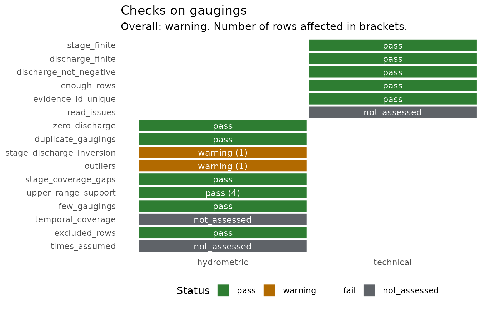

Runs a fixed set of checks on gaugings and returns them as a
FlodeAssessment. It is advice, not a filter: no row is removed,
excluded or altered, and a check that finds a problem names the
evidence_ids concerned so you can look at them.
There are two kinds of check. Technical checks ask whether the data
can be used at all, and fail when it cannot: a stage or discharge that is
missing or not finite, a negative discharge, too few usable rows, a
repeated evidence_id, or a row that read_gaugings() could not read.
Hydrometric checks ask whether the data look right for a river, and
only ever warn, because each is a judgement for a person: zero
discharge, duplicated gaugings, a discharge that falls as stage rises, a
discharge off the curve of its neighbours, a gap in stage coverage, thin
support at the top of the range, few gaugings, no recent gaugings, rows
already marked excluded, and times of day that were assumed.
A check that needs information the table lacks (dates, say, or the
notes read_gaugings() adds) is not_assessed, never pass.
Hydrometric checks look at rows with a finite stage and discharge. The
thresholds are arguments, so a different tolerance is a visible choice.
The outlier check is deliberately cautious. In simulation on clean data
with randomly placed stages it warned about 3 to 7 sets in 100; a
gauging with twice its true discharge was found about 9 times in 10, and
one 50% too high about 6 times in 10. It is a prompt to look, not a
verdict, and outlier_mad sets how easily it speaks.
The checks are meant for one station's gaugings, which is what a rating
is built from. The inversion check compares every pair of gaugings and is
skipped (not_assessed) beyond 10,000 usable rows; check an archive one
station at a time.
Usage
validate_gaugings(
x,
min_gaugings = 10L,
inversion_tolerance = 0.2,
outlier_mad = 4,
gap_fraction = 0.25,
upper_range_fraction = 0.2,
upper_range_min = 3L,
recent_years = 10,
reference_time = Sys.time()
)Arguments
- x
A FlodeEvidence, or a
data.frameordata.tablethatas_flode_evidence()can convert, including the tableread_gaugings()returns.- min_gaugings
Integer. Fewer usable gaugings than this raises the
few_gaugingswarning. Default 10. (Fewer than 4 is a technical failure, because a single limb has three parameters.)- inversion_tolerance
Number. Two gaugings are inverted when the one at the higher stage has a discharge more than this fraction below the one at the lower stage. Default 0.2. When one gauging is inverted with several others (a single high value), it alone is reported, not the gaugings above it; in a simple pair, the higher-stage member is.
- outlier_mad
Number. A gauging whose log discharge lies more than this many robust standard deviations (median absolute deviation) from a cubic through its two nearest neighbours on each side in stage. The two end points at each end are not judged. Default 4.
- gap_fraction
Number. A gap between neighbouring stages wider than this fraction of the whole stage range is reported. Default 0.25.
- upper_range_fraction, upper_range_min
The top
upper_range_fractionof the stage range (default 0.2) should hold at leastupper_range_mingaugings (default 3).- recent_years
Number. The latest gauging should fall within this many years of
reference_time. Default 10.- reference_time
The time to measure recency from. Default
Sys.time(); set it to make a result reproducible.
Value
A FlodeAssessment with one row per check. Read it with
assessment_checks() and assessment_status().
Checks
Technical: stage_finite, discharge_finite, discharge_not_negative,
enough_rows, evidence_id_unique, read_issues.
Hydrometric: zero_discharge, duplicate_gaugings,
stage_discharge_inversion, outliers, stage_coverage_gaps,
upper_range_support, few_gaugings, temporal_coverage,
excluded_rows, times_assumed.
Examples
set.seed(1)
gaugings <- data.frame(
stage_m = round(c(seq(0.4, 3, length.out = 14), 3.05), 3),
discharge_cms = NA_real_
)
gaugings$discharge_cms <- round(3.2 * gaugings$stage_m^1.7 * exp(rnorm(15, sd = 0.03)), 3)
# Put one fault in: a discharge far too high for its stage.
gaugings$discharge_cms[6] <- gaugings$discharge_cms[6] * 3
assessment <- validate_gaugings(gaugings)
assessment
#> <FlodeAssessment> gaugings, 15 row(s) assessed. Overall: warning
#> 11 pass, 2 warning, 0 fail, 3 not assessed
#> [warning] stage_discharge_inversion: 1 gauging is part of a stage-discharge inversion: a discharge more than 20% below that of a gauging at a lower stage.
#> [warning] outliers: 1 gauging lies off the curve of its neighbours in stage.
#> [not_assessed] read_issues: The table has no read_issue column, so reading problems could not be checked.
#> [not_assessed] temporal_coverage: No gauging has a date, so recency could not be judged.
#> [not_assessed] times_assumed: The table has no read_issue column, so assumed times could not be checked.
assessment_checks(assessment)[status != "pass", .(check_id, domain, status)]
#> check_id domain status
#> <char> <char> <char>
#> 1: read_issues technical not_assessed
#> 2: stage_discharge_inversion hydrometric warning
#> 3: outliers hydrometric warning
#> 4: temporal_coverage hydrometric not_assessed
#> 5: times_assumed hydrometric not_assessed
plot(assessment)
